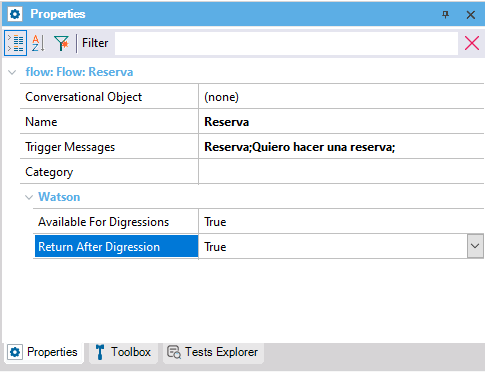

Objects: Conversational Flows Instance
It allows defining, at the end of a digression that had this flow as a target, whether to return to the flow that triggered the digression to end it, depending on whether its value is True or False.
The default value of this property is True; that is to say, when it is necessary to go to another flow to make a query, the default behavior is to return to the main flow, to completely close it.
This property will be visible if the NLP Provider property is set to Watson, and if the Available For Digressions property is set to True.

This property applies only at design-time.
This property is available since GeneXus 17 upgrade 4.
| Backlinks | |
| Available For Digressions property | Digression property |